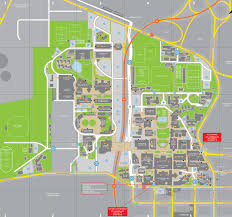

ABOUT ME
I am a graduate trainee at Britehouse
I studied Information Systems at the University of Cape Town. I am interested in UX Design which helps humanize technology to best suit individuals needs.
Zintle Lutseke

Welcome to my website. I am Zintle Lutseke originally from Cape Town but grew up in Queenstown in the Eastern Cape. I studied in Queenstown and later pursued my tertiary degree at the University of Cape Town. I am passionate about helping people solve everyday technology related problems and I like working with people.
Im really good at:
C# programming Language
Web Design
Business Cases and User Requirements Specifications
My Educational Background
1 / 3

Primary school: I attended Balmoral Girls' Primary School from grade 1-7.
2 / 3

High school: I attended Queenstown Girls' High School from grade 8-12.
3 / 3
University: I went to The University of Cape Town where I graduated with a Bachelor of Commerce Degree in Information Systems.
❮
❯
3+
Projects Done
6+
People worked with
3+
Happy Clients
150+
Meetings
MY WORK
Here are some of my latest projects
For my final year project I had to work on booking site for an investments company in South Africa. This was done using C#.
I also had to work on a business architect project for a consultancy company. Both projects required looking into the existing processes and find ways to either enhance or improve these processes using different products
MORE WORK
I have a range of achievements in my life ranging from academic to social
Represented the Eastern Cape Province in netball
Awarded Academic colours and Cum Laude in High school for my senior years
Was part of the book room and stationery shop committees in high school
A part of the Xhosa society choir in high school
A residence senior mentor in University
An O-week committee member in University
A class representative for the final year class in University
WHERE I WORK
I'd love your feedback!

Johannesburg,Gauteng
Phone: +21 894527084
Email: zlutseke@gmail.com
Swing by for a cup of , or leave me a note: